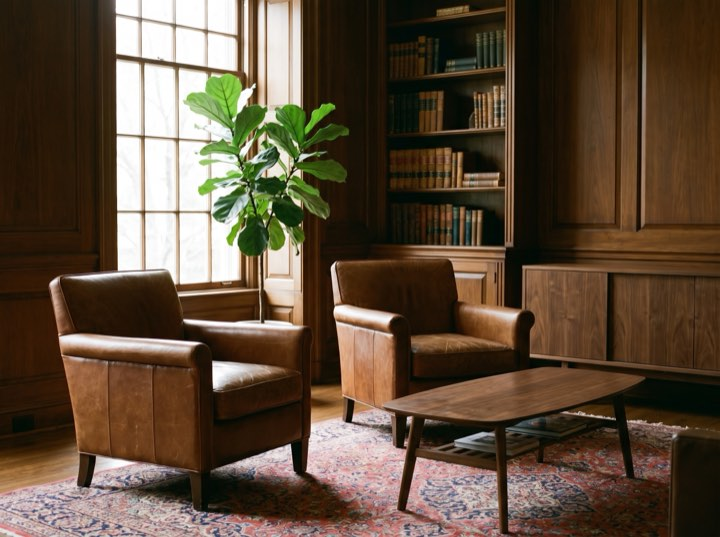

Three conversations
The room they happen in.
Two chairs, one table, no screen. The third conversation ends with a signature or a handshake and either is fine.


Fee-only fiduciary · RIA
Fee-only fiduciary advice for families and business owners. Three unhurried conversations before any paperwork exists: what you have, what you want it to do, and what we would actually change.
Fee-only. Fiduciary. Fee schedule published. No products sold, ever.
Planning first. Investment management matters, but it is rarely the thing that changes an outcome.
Cash flow, tax, insurance and estate structure, reviewed annually. The plan is the product; the portfolio implements it.
Low-cost, globally diversified and tax-aware. We do not attempt to time markets and we will tell you why.
Concentrated position planning, sale structuring and what happens to a family the year after a liquidity event.
We meet your adult children at no additional cost. Most families lose their adviser at inheritance; that is a failure of relationship, not returns.
Three conversations before anyone signs anything, and no cost until you decide to proceed.
Half an hour, no cost, no preparation needed. Mostly us listening and you deciding whether you like us.
We gather everything and analyse it properly: tax returns, statements, insurance, estate documents. Two to three weeks.
Presented in full, in plain English, including what we think you're doing wrong. You take it away whether or not you engage us.
Quarterly reviews, annual deep planning, and access between times without watching a clock.
Three conversations
Two chairs, one table, no screen. The third conversation ends with a signature or a handshake and either is fine.

The first conversation costs nothing and takes about an hour. A good share of people leave reassured about the adviser they already have, which is a fine outcome.
Fee-only. Fiduciary. Fee schedule published. No products sold, ever.